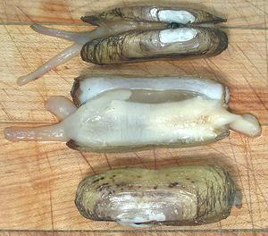

All the genera listed above look much like the photo specimens, except the Pacific (Siliqua patula) which is much shorter. Most are Northern Hemisphere clams, but one species, Navaja (Ensis macha), inhabits both coasts of South America and is a significant commercial catch in Chile. Razor Clams feature a digging foot at one end and a double siphon at the other, Razor clams are very highly regarded as food but are difficult to catch because they can dig down faster than a person can dig them up, and some can dig down more than 40 feet.
The photo specimens were purchased live at a large Asian market in Los Angeles at 2013 US $5.49/pound. They may be Ensis directus or an almost identical species. The longest was 5.88 inches long and 7/8 inch wide. They typically weighed 1.63 ounces and yielded 0.63 ounce steamed edible (39%), or $14.08 per edible pound. That's not at all bad for shellfish around here. The open photo specimen at right in the photo has been steamed.
More on Bivalve Molusks.

The specimens in the photo to the left are of typical shape for the
Pacific razor clam, but the one on our West Coast (Siliqua patula)
has a sorter double siphon rather than two elongated siphons. These
specimens were purchased from the frozen food cases at a large Asian
market in Los Angeles at 2009 US $6.29/pound (thawed weight). They
were typically 2.45 inches long and 0.8 inches wide. 8.88 ounces
yielded 2.13 ounces steamed edible (24%) or $26.14 per edible pound.
The live specimens (photo at top) were tender and delicious with a distinctly briny flavor. They are very meaty due to the powerful digging foot which occupies most of the shell. Note the one at the right that has been steamed. The dark splotch at left center is the stomach, which is easy to clean out if you want to bother. Clams are usually eaten stomach contents and all.
sf_bvrazorz 130914 - www.clovegarden.com